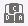
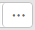

Function Description
On the HTML5 Integrated Remote Console, you can access and manage a server, install or repair the OS, and install drivers on the server.
With the Integrated Remote Console, you can:
- Use the keyboard and mouse of the local PC to remotely manage the server.
- Enable the server to remotely access the local PC over a network using a virtual floppy disk drive (FDD) or DVD-ROM drive. To the server, the use of the virtual FDD or virtual DVD-ROM drive is the same as the use of a physical USB device.
Icon |
Description |
|---|---|
|
Locks the toolbar. |
|
Hides the toolbar. |
|
Shows the server desktop in full-screen mode. NOTE:
Tiled display is not supported. |
|
Cancels the full-screen display of the server desktop. |
|
Displays the power control menu, which includes the following:
|
|
Sets the first boot device for the OS. It provides the following options:
|
 |
Sends or customizes combination keys. The combination keys are described as follows:
NOTE:
The combination keys and their functions vary with the operating system. The combination keys and their functions described here are only for Windows. |
|
Controls the server mouse. The control operations include the following:
Default setting: Mouse Acceleration NOTE:
|
|
Selects and uses a virtual DVD-ROM drive. NOTE:
The virtual DVD-ROM drive and virtual FDD are compound devices. When a virtual DVD-ROM drive is connected to the server, the server also identifies a virtual FDD without media. You can use the virtual FDD by following the normal procedure. |
|
Selects and uses a virtual floppy disk drive. NOTE:
The virtual DVD-ROM drive and virtual FDD are compound devices. When a virtual FDD is connected to the server, the server also identifies a virtual DVD-ROM drive without media. You can use the virtual DVD-ROM drive by following the normal procedure. |
|
Records a video for the operations performed on the server. NOTE:
After the video recording function is enabled, sensitive service information may be captured during video recording. |
|
Customizes the client keyboard. By default, the BMC automatically selects the type of the client keyboard to be used. If the keyboard automatically selected does not function well, you can manually specify the keyboard type.
|
|
Displays help information. |
|
Adjusts the image clarity on the server desktop. |


GUI
Choose Remote Console from the main menu, and click HTML5 Integrated Remote Console (private) or HTML5 Integrated Remote Console (Shared).

If you click HTML5 Integrated Remote Console (Shared), two users are allowed to simultaneously access and perform operations on the server. Each user can view the operations performed by the other user, which causes security risks.
Table 2 describes the areas.
Area |
Function |
|---|---|
Toolbar (top) |
You can use the icons on the toolbar to remotely manage the server. |
Server desktop (middle) |
You can use the mouse and keyboard on your local PC to manage the server on a real-time basis. |
Status bar (bottom) |
Displays the prompt information of the real-time desktop as well as the communication data between the server and the local PC, IP address, and product serial number of the server. |
Powering On the Server
- On the KVM screen, click
 on the toolbar and choose Power On from the menu.
on the toolbar and choose Power On from the menu. - Click OK.
The server power-on time varies depending on the server configuration.
Powering Off the Server

- Before powering off the server, ensure that all services are stopped.
- Select a power-off mode based on your requirements. For details about the difference between the power-off modes, see in the BMC User Guide.
- On the KVM screen, click on the toolbar and choose Forced Power Off or Power Off.
- Click OK.
Forcibly Resetting or Power Cycling the Server
- A forced reset or power cycle may damage user programs or unsaved data.
- Before forcefully resetting the system or forcefully power cycling the server, ensure that no service risk exists.
- Select a reset mode (Forced System Reset or Forced Power Cycle) based on service requirements. For details about the difference between the two modes, see in the BMC User Guide.
- On the KVM screen, click on the toolbar and choose Forced System Reset or Forced Power Cycle.
- Click OK.
The reset or power cycle duration varies depending on the server configuration.
Setting the First Boot Device for the OS
- On the KVM screen, click
 on the toolbar.
on the toolbar.The boot device options are displayed.
- Choose the first boot device as required.
For details about the options, see Table 1.
Sending a Combination Key
- On the KVM screen, click on the toolbar.
The combination key dialog box is displayed.
- Click a combination key.
The server performs the operation defined by the combination key.
If you want to customize a combination key, enter the keys in the text box next to Custom Key and click OK.
Accelerating the Remote Mouse
Accelerate the mouse on the server desktop to synchronize it with the mouse on the local PC.
On the KVM screen, click  on the toolbar and choose Mouse Acceleration.
on the toolbar and choose Mouse Acceleration.
The server mouse is synchronized with the mouse on the local PC.
Using a Single Mouse
If the mouse on the local PC is not synchronized with the server desktop, use the single-mouse function to hide the mouse on the local PC and display only the mouse of the server desktop on the
On the KVM screen, click on the toolbar and choose Single Mouse.
Resetting the Keyboard and Mouse
Simulate the removal and installation of a USB keyboard and mouse when the keyboard and mouse on the server desktop stop responding.
On the KVM screen, click on the toolbar and choose Mouse & Key Reset.
The USB keyboard and mouse are reset.
Specifying the Client Keyboard
On the KVM screen, click  on the toolbar and select the keyboard to be used.
on the toolbar and select the keyboard to be used.
Mounting a DVD-ROM Drive
Mount the DVD-ROM drive on the local PC to the server.
- On the KVM screen, click
 on the toolbar.
on the toolbar. - Select Image File.
- Click .
The Open dialog box on the local PC is displayed.
- Select the *.iso file and click Connect.
The image file is successfully loaded to the server.
- To load another image file, click Eject, select the *.iso file to be loaded, and click Insert.
- To unmount the DVD-ROM drive, click Disconnect.
Mounting a File
Mount a file on the local PC to the server so that the server can access the file in read-only mode.
- On the KVM screen, click on the toolbar.
- Select Local File.
- Click .
The Open dialog box on the local PC is displayed.
- Select the file to be mounted.
- Click Insert.
The file on the PC is successfully mounted to the server.
- After the file is successfully mounted, you can open and view the file on the server OS.
- To unmount the file, click Disconnect.
Loading an Image File from the Local PC Through the Virtual FDD
Mount the FDD of the local PC and load an image file from the local PC to the server.
The size of the image file to be mounted must be 1.44 MB. Otherwise, the image file cannot be mounted.
- On the KVM screen, click
 on the toolbar.
on the toolbar.
- Click .
The Open dialog box on the local PC is displayed.
- Select the *.img file and click Connect.
- Click Connect.
The image file is successfully mounted to the server.
- To load another image file, click Eject to eject the existing virtual FDD, select the new image file, and click Insert.
- To unmount the virtual FDD, click Disconnect.
Recording a Video of the Server Desktop
Record a video of the desktop displayed on the Remote Virtual Console.
After the video recording function is enabled, sensitive service information may be captured during video recording.
- On the KVM screen, click
 on the toolbar.
on the toolbar.When the icon changes to
 , the video recording starts.
, the video recording starts. - Click to stop the recording.
The video file is automatically downloaded and saved to the local PC. The video file is a .rep file. You can play the video file on the Play Back page.